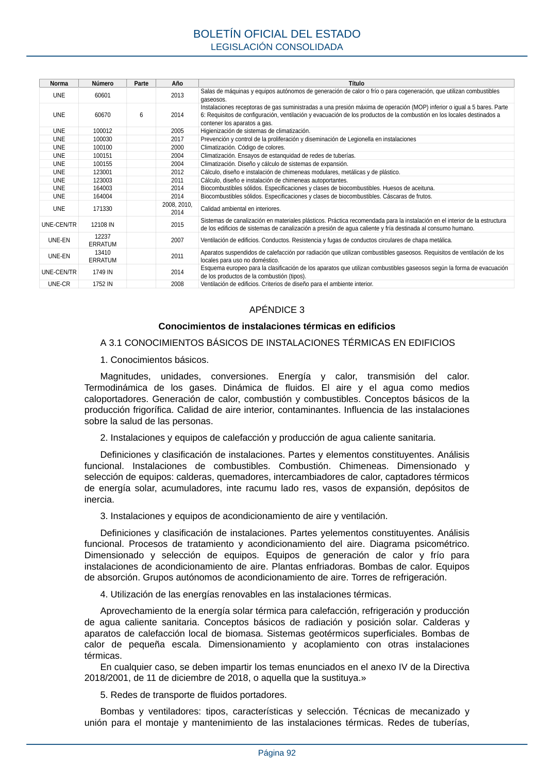

DB-HE2 RITE · edición 2022-08-02 · capa asociada
Documento RITE-asociada · SHA-256 del PDF ad1680c83bf4c7f5c656af1794c32ad0669ad9f36ac293737ff3f95177ff7b26
Copia fiel del PDF fuente · Fuente oficial
Ficha de la disposición en la fuente oficial
Texto extraído y reorganizado: Basado en datos de la Agencia Estatal Boletín Oficial del Estado. PDF reproducido: Fuente de los datos: Agencia Estatal Boletín Oficial del Estado.
Formatos: JSON del segmento · Markdown
Norma Número Parte Año Título UNE 60601 2013 Salas de máquinas y equipos autónomos de generación de calor o frío o para cogeneración, que utilizan combustibles gaseosos. UNE 60670 6 2014 Instalaciones receptoras de gas suministradas a una presión máxima de operación (MOP) inferior o igual a 5 bares. Parte 6: Requisitos de configuración, ventilación y evacuación de los productos de la combustión en los locales destinados a contener los aparatos a gas. UNE 100012 2005 Higienización de sistemas de climatización. UNE 100030 2017 Prevención y control de la proliferación y diseminación de Legionella en instalaciones UNE 100100 2000 Climatización. Código de colores. UNE 100151 2004 Climatización. Ensayos de estanquidad de redes de tuberías. UNE 100155 2004 Climatización. Diseño y cálculo de sistemas de expansión. UNE 123001 2012 Cálculo, diseño e instalación de chimeneas modulares, metálicas y de plástico. UNE 123003 2011 Cálculo, diseño e instalación de chimeneas autoportantes. UNE 164003 2014 Biocombustibles sólidos. Especificaciones y clases de biocombustibles. Huesos de aceituna. UNE 164004 2014 Biocombustibles sólidos. Especificaciones y clases de biocombustibles. Cáscaras de frutos. UNE 171330 2008, 2010, 2014 Calidad ambiental en interiores. UNE-CEN/TR 12108 IN 2015 Sistemas de canalización en materiales plásticos. Práctica recomendada para la instalación en el interior de la estructura de los edificios de sistemas de canalización a presión de agua caliente y fría destinada al consumo humano. UNE-EN 12237 ERRATUM 2007 Ventilación de edificios. Conductos. Resistencia y fugas de conductos circulares de chapa metálica. UNE-EN 13410 ERRATUM 2011 Aparatos suspendidos de calefacción por radiación que utilizan combustibles gaseosos. Requisitos de ventilación de los locales para uso no doméstico. UNE-CEN/TR 1749 IN 2014 Esquema europeo para la clasificación de los aparatos que utilizan combustibles gaseosos según la forma de evacuación de los productos de la combustión (tipos). UNE-CR 1752 IN 2008 Ventilación de edificios. Criterios de diseño para el ambiente interior.
